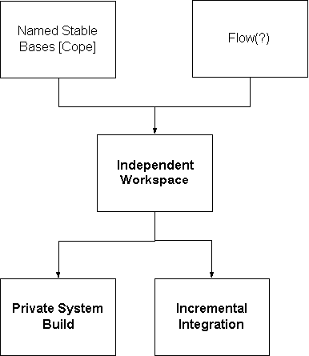

Steve Berczuk
Introduction
A good organizational structure and architecture can help you build good software on time, but cannot guarantee results unless an adequate day to day work process is in place. After the architecture is defined, you need structures to support implementation. These include
Configuration management structures include policy issues such as branching, Build repeatability involves the structures which make it possible to reliably build identifiable versions of the system so that all the other activities related to releasing a product can proceed. Workspace structures involve the developer’s day-to-day work more closely, though they need the infrastructure provided by build repeatability and SCM. Indeed, all these elements interact strongly, since good CM support makes certain workspace functions quite easy.
This section discusses workspace management patterns.
These workspace patterns follow on the context created by the organizational structure and the architecture of the product. The configuration management structure both sets the context, and assists in the implementation of these structures.

Figure 1: Pattern Connections
The Patterns
Aliases : Independent Development
Even when you have periodic system builds (Named Stable Bases), and a means to share the latest build with the development environment, there are situations when a developer may not want to get the latest of everything. While performing a task, any change to the code base can be disruptive to the developer’s Flow.
The structure of a developer’s workspace needs to balance the concerns of keeping up to date, with the needs of a developer to maintain a stable environment, thus allowing a Programming Episode to proceed smoothly. How can we balance the need for developers to build against current revisions with the desire to avoid interruptions in flow by having things they depend on from changing from underneath them, disrupting their Flow?
Usually, it is important for developers to work with current versions of all elements of the software system. This provides them with an accurate picture of the how their code interacts with other components of the system. The benefits of working with the latest and greatest code include keeping up with the latest enhancements, and avoiding running into already fixed bugs to avoid getting out of synch with interface changes. Keeping current helps ensure steady progress and makes sure builds go smoothly.
One approach to keeping developers up-to-date is to have developers either reference a common set of libraries or automatically get updates for a common set of libraries and header files, so that they will automatically get the latest of everything, except for code they are working on (ie which they have checked out of the SCM system). The reference solution saves disk space. Both solutions guarantee that the developer will always be developing against the latest build.
Introducing new software into a developer’s environment while the developer is working on a problem or debugging may complicate the debugging process. It can introduce new behavior, causing a test case to no longer reproduce the problems, hiding the problem and not fixing it. It can also distract the developer from the main task because of the time spent resolving integration issues -- in some cases, code may no longer compile due to interface changes that are not necessarily relevant to the element being debugged. This problem can also occur with artifacts other than code, such as test data, or a database schema or data set.
Tasks occasionally span build intervals, though, so controlling when a developer updates their workspace can be counter productive.
Therefore:
Provide Independent Workspaces where developers can maintain control off their development environments, This allows them to avoid having an integration step interrupt work in progress. The environment should represent a snapshot of all the software being developed in a system, not just the code the developer is modifying. Try to ensure that the private development area is not used as a means of avoiding integration issues.
¨¨¨
This pattern conflicts somewhat with Incremental Integration when a developer delays retrieving the current release for too long, so make sure that developers are encouraged to use integrate their code frequently, perhaps by providing a mechanism for easily backing of a difficult change.
A consequence of this pattern is that, depending on how this is implemented, the disk space requirements of a project may grow quickly as N developers will have their own copies of the source code. But often the costs of personnel greatly exceed the cost of an extra disk. A modification to this approach is that stable, and distantly related subsystems can be used by reference, but one should be made aware of when changes are imminent. In this case the CM system should provide access to prior Named Stable Bases as well.
This concept can be applied to things other than souce code. Test data files, database user areas (for example, in Oracle, you can assign a Schema to a User), or the allowing a user to run a controlled private instance of a server process rather than share a common server resource.
The easiest way to implement this is by starting with the latest of the Named Stable Bases, copying the build products from that build, and getting the files you will be working with, and the source for all the subsystems which your subsystem depends on, corresponding to that build. Periodically refresh the workspace with a new build or get the latest files and build the files yourself. Some developers get the latest build only rarely. A good dependency map is essential to make sure that all effected files get rebuilt.
In addition to simplifying debugging, this approach also speeds development of new versions, since a developer can feel free to change an interface for a future version without waiting for everyone else to catch up.
Example
A developer is working on a problem The Developer Workspace is self contained with all of the files needed to build the system. Developers retrieve new files from the repository only when they are ready and the current problem is solved.
Known Uses
Many Development organizations.
Some source control tools provide direct support for this concept. Clearcase by Pure Atria provides the concept of Views to give us this facility. The SCM tool CA/Endevor has the concept of Private Stages which allow for this. Private Stages are not available to anyone except the owner. When a private stage is "ready" the developer promotes the changes in that stage to a public stage.
The "Using the Daily Build and Smoke Test" best practice in Rapid Development says that "developers should maintain private versions of the source files they're working on[11]."
Branching can relate to workspaces.
Developers work out of their own workspaces (Independent Workspace) There is a procedure for building the system (NamedStableBases), and there is a mechanism in place for developers to integrate their changes into the latest code set (Incremental Integration)
¨¨¨
Some changes to the code may have wide-ranging effects. Waiting for the usual system build to test integration may make turnaround time too slow, as well as expose others to inadequately tested work. A developer needs to verify that proposed code changes will work within the context of the existing source base.
One way to develop software is to start from the latest public build, copying all the relevant files into your workspace. Starting from the system build saves time, but the system build may not always be as up-to-date as needed; You may have made a change which has far reaching impact (such as a change to a header file or other interface specification). You may have just checked out the latest version of 1 subsystem, without being aware that an interface or constant defined in that system has been changed, requiring a build of other subsystems.
For a sufficiently complex system, it is often useful to rebuild everything from a clean environment to gauge the effect of a change.
Therefore:
Provide for a Private System Build process so that a developer can build as much of the system as possible from source. Dependencies should be well understood and documented so that a developer can easily rebuild all portions of the source tree in their Private Workspace that are affected by the change.
¨¨¨
The dependencies should be encoded using a mechanism such as a Makefile or a development Workspace with dependencies defined so that rebuild of all affected packages is automatic. To do rebuild and test all of the relevant components, the developer may need access to any third party products (header These files, typelibraries, library files) can be added to the version control system or they can be made available otherwise. (Third Party Codeline, VC The World)
A good starting point for a development workspace is the build products from a centralized build (Named Stable Bases). Changes to build products are made by different people in a controlled fashion (Owner Per Deliverable, Code Ownership). Since other developers are working on a project at the same time, having your changes work with the latest system build is not a good indicator of whether the next build will work. There will be occasional mismatches between units of work This can make it difficult for the integration release to work as expected, complicating WorkIntegration.
For iterative development to work well, it is necessary to make sure that components work together. Subsystems get developed at different rates. Integrating too many changes at once results in surprises that make building software harder. We need a way to integrate without surprises, allowing developers to see the effects of their changes in on parts of the source code, and also to allow individual developers to integrate with other changes which will be available in the next build.
¨¨¨
One way to see if changes integrate is to submit all changes to he next build and see what happens. In some circumstances this is unavoidable because, depending on the timing of changes, unexpected changes do happen. We want to minimize the effects of this as much as possible because this is not always the most time effective, since the buildmaster is not always the best person to track down the true source of the problem, and the correct resolution. The latest build may not incorporate the changes a colleague checked in an hour ago, and it certainly will not include changes you made and want to test before checkin.
Parameters to consider include:
Encourage developers to check their changes against the latest of all other source. Provide a mechanism to allow developers to build all the current software periodically. Developers should be discouraged from maintaining long intervals between "check-ins." Developers should also be able to build against any of the Named Stable Bases or the newest checked in software, at will.
¨¨¨
In an ideal scheme a developer can build all or part of the system, using any of the Named Stable Bases as a starting point. The developer should then get the latest code. This makes it easy for developers to build from files that are likely to be in the release (perhaps the newest code in the revision control system's trunk) to anticipate, and allow time to correct for, incompatibilities. The goal is to avoid a "Big-Bang" integration and allow the Developmental Build to proceed smoothly. For many systems the time and space required to perform this check is small compared to the system wide effect of lost productivity when an change is not compatible.
These integration builds should be done in the developers' Independent Workspaces to ensure that incompatible changes do not effect anyone else unnecessarily.
This practice can be followed with artifacts other than code. Developers' could also have private database work areas, for example, if development is at a point where the schema is subject to change so that they can verify that the schema change does not break other code unexpectedly.
If the system takes quite a while to build, the time required to validate a wide ranging change in an independent workspace may be prohibitive, but remember to factor in the costs of the time spent by other developers on the project. Balance this with Private Versioning to allow the developer some leeway on deciding when to integrate their new code into their environment, but do not put it off for too long. Mitigate the effects of the occasional unsuccessful system build by allowing the individual developer to control which changes they incorporate when (Independent Workspaces (*), Private System Build, Independent Workspaces). If dependencies are well understood, it is possible to realize the spirit of this pattern by not rebuilding that subset of modules which are unrelated to the module being changed.
Even with Incremental Integration, a build may break because of a later change, but this is at least a way to minimize the chances.
(The following are in draft form)
Version Tree Top
<configure your version tree so that all components which the system depends upon are under a root>
What I want to get at here is "where do you branch?"
Communications Backbone
In a development team, even with appropriate division of work <XREF?> some work may require integration work to be done by another developer, including interface changes which will break the buildability of the system.
How do you share changes with other developers?
Checking files into source control may break the build. One can get around this with integration branches, but that has overhead.
Develop a convention for sharing code changes and use it consistently. It is best to use the configuration management system for this. To avoid problems of work pending integration breaking the build, use staging branches, labels, or simply allow that a build may break over a given window.
(? are there any forces arguing against this?)
Flow
(from Peopleware)
Context:
Problem: How to allow people to work effectively?
Solution: Set up an environment which enables a state of Flow, where interruptions are minimized and controlled.
Pattern summaries
|
Pattern Name |
Intent |
|
Private System Build(*) |
Allow a developer to rebuild the world to see how their code affects other code. Also allows a developer to debug builds. |
|
Incremental Integration |
Make sure developers rebuild the system with the latest of all source before checking in. |
|
Independent Workspaces (*) |
Allow a developer to control when they introduce new "stuff" into their development environment. |